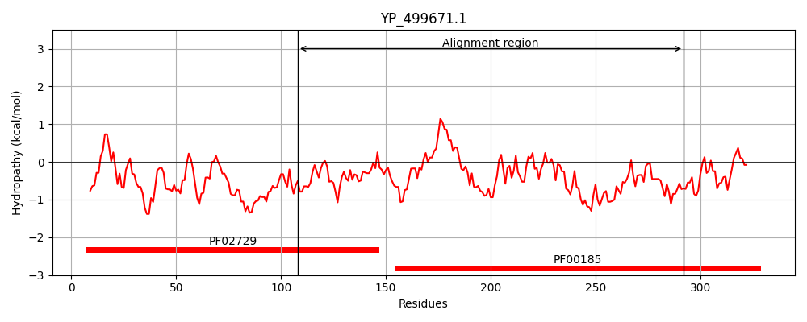

Hit Accession: Q46342
Hit TCID: 1.C.57.1.3
Hit Description: gnl|BL_ORD_ID|13658 gnl|TC-DB|Q46342|1.C.57.1.3 CYTOTOXIN L - Clostridium sordellii.
Mach Len: 193
e:0.000041
Query TMS Count : 0
Hit TMS Count: 0
TMS-Overlap Score: 0.000000
Predicted Substrates:CHEBI:7990;peptide, CHEBI:25367;molecule
BLAST Alignment:
Score: 105 , Bit scores: 45 bits, E-value: 4.1e-05, Alignment length: 193, Percentage identity: 24
Query: 108 GFSQRTVETLAEYSGVP--VWNGLTDEDHPTQVLADFLTAKEVLKKDYADINFTYVGDGRNNVANALMQGAAIMGMNFHLVCPKELNPTDELLNRCKNIAAENGGNILITDDIDQGVKGSDVIYTDVWVSMGEPDEVWKERLELLKPYQVNKEIMDKTGNPNVIFEHCL---PSFHNAD---TKIGQQIFEKY 292
GFS V +G+P V N L +D T+V+ DY F ++ A L+ IM + ++ + N L +C+ AE G +TDDID + Y W+S+ + + KE+++ +K++M PN +F + + P F + D TK+ +I + Y
Sbjct: 1088 GFSILLVPLAGISAGIPSLVNNELILQDKATKVI------------DY----FKHISLAETEGAFTLLDDKIIMPQDDLVLSEIDFNNNSITLGKCEIWRAEGGSGHTLTDDIDHFFSSPSITYRKPWLSIYDVLNIKKEKIDF------SKDLMVLPNAPNRVFGYEMGWTPGFRSLDNDGTKLLDRIRDHY 1258 | Protein Hydropathy Plots: |
|---|
|  | |
Pairwise Alignment-Hydropathy Plot:
|
|---|
|